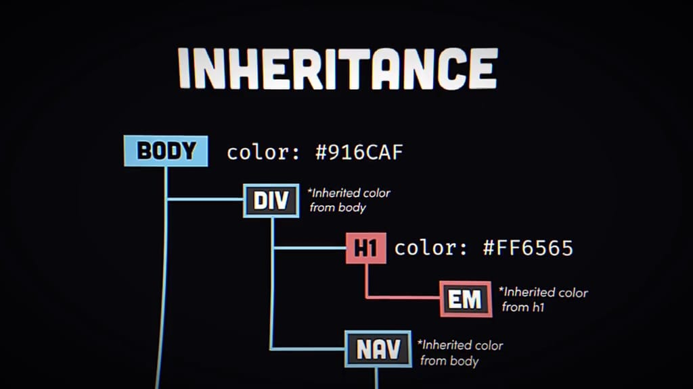
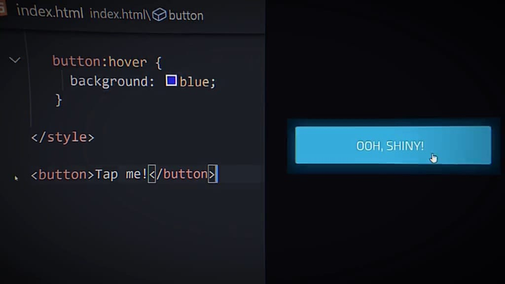
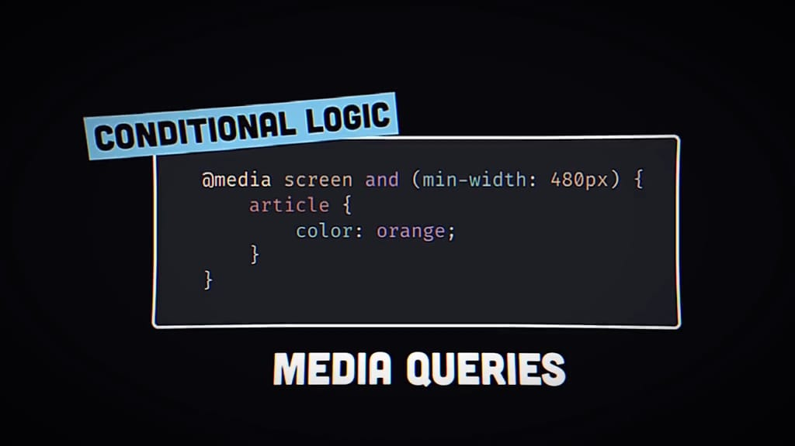

Håkon Wium Lie
Håkon Wium Lie
CSS (Cascading Style Sheets) digunakan untuk mendesain dan mengatur tata letak halaman web.
CSS pertama kali diperkenalkan oleh Håkon Wium Lie pada tahun 1994. Tujuannya adalah untuk memisahkan konten dari presentasi, sehingga memudahkan pengelolaan dan pemeliharaan situs web. Sejak saat itu, CSS terus berkembang, dengan versi terbaru seperti CSS3 yang menawarkan berbagai fitur baru seperti animasi, transisi, dan model layout yang lebih fleksibel.
Inline: <h1 style="color:blue;">Judul</h1>
Internal: <style>h1 { color: blue; }</style>
External: <link rel="stylesheet" href="style.css">
/* Selektor Kelas */
.classname {
color: red;
}
/* Selektor ID */
#idname {
font-size: 20px;
}
/* Selektor Elemen */
p {
margin: 10px;
}
.container {
display: flex;
justify-content: space-between;
}
.item {
flex: 1;
margin: 10px;
}
.grid-container {
display: grid;
grid-template-columns: repeat(3, 1fr);
gap: 10px;
}
.grid-item {
background-color: #ccc;
padding: 20px;
text-align: center;
}
.box {
width: 100px;
height: 100px;
background-color: red;
transition: background-color 0.5s;
}
.box:hover {
background-color: blue;
}

@keyframes example {
from {background-color: red;}
to {background-color: yellow;}
}
.animated-box {
width: 100px;
height: 100px;
animation: example 4s infinite;
}

body { background-color: #f4f4f4; }